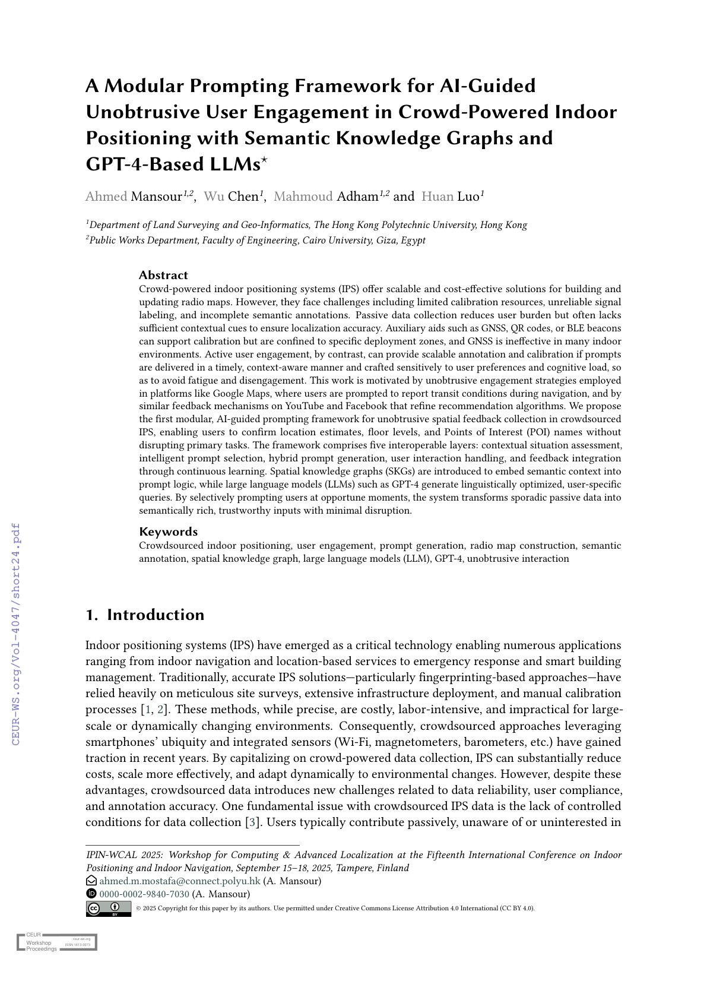

A Modular Prompting Framework for AI-Guided Unobtrusive User Engagement in Crowd-Powered Indoor Positioning with Semantic Knowledge Graphs and GPT-4-Based LLMs
Paper preview

Key figures
Summary
This paper proposes a modular AI-guided prompting framework for collecting unobtrusive spatial feedback in crowd-powered IPS, linking prompt logic, semantic context, SKGs, and LLM-generated user interaction.
When to cite this paper
- LLMs or AI agents are used to support crowd-powered IPS
- unobtrusive user engagement is needed for spatial feedback collection
- semantic knowledge graphs support indoor localization annotation
- prompting strategies are designed for radio map construction and validation
Keywords
crowdsourced indoor positioninguser engagementprompt generationradio map constructionsemantic annotationspatial knowledge graphlarge language modelsGPT-4unobtrusive interaction
Official link
Add DOI or official URL when available.
For publisher-restricted articles, link to the DOI or an allowed accepted manuscript rather than uploading a restricted PDF.
BibTeX
@inproceedings{Mansour2025a,
title = {A Modular Prompting Framework for AI-Guided Unobtrusive User Engagement in Crowd-Powered Indoor Positioning with Semantic Knowledge Graphs and GPT-4-Based LLMs},
author = {Ahmed Mansour and Wu Chen and Mahmoud Adham and Huan Luo},
year = {2025},
journal = {IPIN-WCAL / CEUR Workshop Proceedings},
}